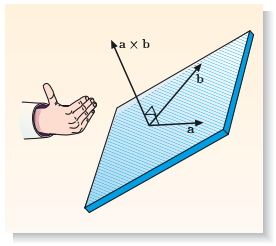

Vectors in ordinary three-dimensional space, may be referred to as ordinary vectors. This is to distinguish them from the more general abstract vectors will be discussed later on. First, we need to define a scalar. A scalar quantity is fully described by a single number, together with an appropriate unit of measurement. For example, mass, charge and temperature are scalar quantities. Some scalars, such as mass, turn out to be non-negative but others, such as charge, can be positive, zero or negative. The magnitude of a scalar quantity is the size of the quantity ignoring any possible negative sign. If \( x \) is a scalar, we denote its magnitude by \( |x| \). Magnitudes can never be negative.
An (ordinary) vector is a quantity that is characterized by both a magnitude and a direction in (ordinary) space. For example, the velocity of a particle is a vector because it has a magnitude (the particle’s speed) and a direction (the particle’s direction of motion). In print, vectors are usually denoted by bold type, e.g. \( \boldsymbol{v} \). In handwritten work, they are generally denoted by underlining with straight or curly lines (e.g. \( \underline{v} \) or \( \underset{\sim}{v} \)).
The magnitude of a vector a can be written as \( |\boldsymbol{v}| \). More commonly, though, it is written simply as \( a \), where the absence of bold print (or underlining) serves to show that \( a \) is not a vector. A vector with zero magnitude is called the zero vector, \( \boldsymbol{0} \).
If two vectors, \( \boldsymbol{a} \) and \( \boldsymbol{b} \), have the same magnitude and the same direction we say that these vectors are equal to one another and write \( \boldsymbol{a} = \boldsymbol{b} \). Strictly speaking, this equality does not imply that the arrows representing \( \boldsymbol{a} \) and \( \boldsymbol{b} \) are identical. They must have the same length and they must point in the same direction, but they could be parallel to one another, with different starting points.
We often need to multiply a vector by a scalar. The figure below shows how this is interpreted geometrically. This is also called the scaling of a vector by a scalar. Given any vector \( \boldsymbol{a} \) and any scalar \( \lambda \), the product \( \lambda \boldsymbol{a} \) is a new vector with magnitude \( |\lambda| |\boldsymbol{a}| \), pointing either parallel or antiparallel to \( \boldsymbol{a} \). If \( \lambda \) is positive, \( \lambda \boldsymbol{a} \) points in the same direction as \( \boldsymbol{a} \); if \( \lambda \) is negative, \( \lambda \boldsymbol{a} \) points in the opposite direction.
The vector \( (1/|a|) \boldsymbol{a} \) is a vector of unit magnitude pointing in the same direction as \( \boldsymbol{a} \). Such a vector is called a unit vector of \( \boldsymbol{a} \) and is given the special symbol \( \boldsymbol{\hat{a}} \) (pronounced a-hat). Taking the equation \( ((1/|a|) \boldsymbol{a} = \boldsymbol{\hat{a}} \), and multiplying both sides by \( |a| \), we obtain \[ \boldsymbol{a} = |a| \boldsymbol{\hat{a}}, \] which neatly splits a vector into a product of two terms: \( |a| \) gives the magnitude of the vector and \( \boldsymbol{\hat{a}} \) gives the direction of the vector. The units are contained in the magnitude, not the unit vector. Any unit vector is dimensionless and has magnitude 1.
We can also add vectors together to produce a new vector. The geometric rule for adding two vectors is shown in figure below. Arrows representing the vectors are drawn with the head of the first arrow, \( \boldsymbol{a} \), coincident with the tail of the second arrow, \( \boldsymbol{b} \). The arrow joining the tail of \( \boldsymbol{a} \) to the head of \( \boldsymbol{b} \) then represents the vector sum \( \boldsymbol{a} + \boldsymbol{b} \). This is called the triangle rule of vector addition. Any number of vectors can be added together by repeated applications of this rule. In geometric terms, it is clear that \( |\boldsymbol{a + b}| ≤ |\boldsymbol{a}| + |\boldsymbol{b}| \), and this is called the triangle inequality.
Vector subtraction is defined using scaling and vector addition. The vector \( \boldsymbol{a} - \boldsymbol{b} \) is interpreted as the sum of \( \boldsymbol{a} \) and \( - \boldsymbol{b} \). We can then manipulate vector equations using the rules of ordinary algebra. One use of vector subtraction is in describing the displacement of one point from another. The figure below shows two vectors \( \boldsymbol{r_1} \) and \( \boldsymbol{r_2} \) whose arrows start at the origin O and end at points 1 and 2. These vectors are called the position vectors of points 1 and 2. The figure also shows \( \boldsymbol{r_{12}} \), which is the displacement vector of point 1 from point 2. Using the triangle rule, we see that \[ \boldsymbol{r_1} = \boldsymbol{r_2} + \boldsymbol{r_{12}} \implies \boldsymbol{r_{12}} = \boldsymbol{r_1} - \boldsymbol{r_2}. \]
Strictly speaking, vectors are independent of any coordinate system, but in practice it is difficult to describe or manipulate them without using a fixed coordinate system. We generally use a Cartesian coordinate system — a set of three mutually perpendicular axes meeting at an origin. Three vectors of unit length (called basis vectors) point along the directions of the three axes. The usual way of labelling a Cartesian coordinate system is shown in the figure below to the left: the three axes are called the \( x \)-axis, \( y \)-axis and the \( z \)-axis, and the corresponding basis vectors are labelled \( \boldsymbol{e_x} \), \( \boldsymbol{e_y} \) and \( \boldsymbol{e_z} \).
The set of three basis vectors is said to provide a basis for ordinary three-dimensional space. This means that any vector \( \boldsymbol{a} \) can be expressed as a linear combination of the three basis vectors: \[ \boldsymbol{a} = a_x \boldsymbol{e_x} + a_y \boldsymbol{e_y} + a_z \boldsymbol{e_z}, \] where the coefficients in the sum \( a_x \), \( a_y \) and \( a_z \) are the (scalar) components of the vector.
The components are defined by dropping perpendiculars onto the axes, as in the figure above to the right. If the vector a has magnitude \( a \) and points in a direction that makes an angle \( \theta_x \) with the positive \( x \)-direction, the \( x \)-component of a is given by \[ a_x = |\boldsymbol{a}| cos(\theta_x), \] where \( 0 \le \theta_x \le \pi \), with similar definitions for \( a_y \) and \( a_z \).
Vector operations are simply expressed in terms of components. To multiply a vector by a scalar, \( \lambda \), we multiply each of its components by \( \lambda \): \[ \lambda \boldsymbol{a} = (\lambda a_x) \boldsymbol{e_x} + (\lambda a_y) \boldsymbol{e_y} + (\lambda a_z) \boldsymbol{e_z}. \]
To add or subtract two vectors, we add or subtract their components: \[ \boldsymbol{a} \pm \boldsymbol{b} = (a_x \pm b_x) \boldsymbol{e_x} + (a_y \pm b_y) \boldsymbol{e_y} + (a_z \pm b_z) \boldsymbol{e_z}, \] and, more generally, any linear combination of vectors involves a similar linear combination of components: \[ \lambda \boldsymbol{a} \pm \mu \boldsymbol{b} = (\lambda a_x \pm \mu b_x) \boldsymbol{e_x} + (\lambda a_y \pm \mu b_y) \boldsymbol{e_y} + (\lambda a_z \pm \mu b_z) \boldsymbol{e_z}. \]
In general, any vector equation can be expressed in terms of components. For example, the equation \[ a = b \implies a_x \boldsymbol{e_x} + a_y \boldsymbol{e_y} + a_z \boldsymbol{e_z} = b_x \boldsymbol{e_x} + b_y \boldsymbol{e_y} + b_z \boldsymbol{e_z}. \] We can equate corresponding components on both sides to obtain \[ a_x = b_x, a_y = b_y \text{ and } a_z = b_z. \] So, one vector equation splits into three scalar equations for the components. Vector equations have the great advantage of brevity, but numerical calculations are usually carried out using the components.
The zero vector has three zero components: \[ \boldsymbol{0} = 0 \boldsymbol{e_x} + 0 \boldsymbol{e_y} + 0 \boldsymbol{e_z}. \] It is different from the number \( 0 \), and is distinguished from \( 0 \) by using bold print or underlining. The zero vector could appear in an equation such as \[ \boldsymbol{a} − \boldsymbol{a} = \boldsymbol{0}. \]
The position vector of a point P in a coordinate system with origin O is \[ \boldsymbol{r} = x \boldsymbol{e_x} + y \boldsymbol{e_y} + z \boldsymbol{e_z}, \] where \( x \), \( y \) and \( z \) are the Cartesian coordinates of the point in the given coordinate system. The magnitude of the position vector, \[ |\boldsymbol{r}| = \sqrt{x^2 + y^2 + z^2}, \] is the distance of the point from the origin.
Finally, the displacement vector of point 1, with position vector \[ \boldsymbol{r_1} = x_1 \boldsymbol{e_x} + y_1 \boldsymbol{e_y} + z_1 \boldsymbol{e_z}, \] from point 2, with position vector \[ \boldsymbol{r_2} = x_2 \boldsymbol{e_x} + y_2 \boldsymbol{e_y} + z_2 \boldsymbol{e_z}, \] is \[ \boldsymbol{r_{12}} = \boldsymbol{r_1} - \boldsymbol{r_2} = (x_1 - x_2) \boldsymbol{e_x} + (y_1 - y_2) \boldsymbol{e_y} + (z_1 - z_2) \boldsymbol{e_z}, \] The magnitude of the displacement vector, \[ |\boldsymbol{r_{12}}| = \sqrt{(x_1 - x_2)^2 + (y_1 - y_2)^2 + (z_1 - z_2)^2}, \] is the distance between points 1 and 2.
The scalar product (or dot product) of two vectors \( \boldsymbol{a} \) and \( \boldsymbol{b} \), is defined by \[ \boldsymbol{a} \cdot \boldsymbol{b} = a_x b_x + a_y b_y + a_z b_z, \] where \( a_x \), \( a_y \), \( a_z \), \( b_x \), \( b_y \) and \( b_z \), are the components of the vectors in a given Cartesian coordinate system. It can be shown that the right-hand side of the equation avobe is independent of the orientation of the coordinate system. Let us temporarily choose a coordinate system whose \( x \)-axis is aligned with the vector \( \boldsymbol{a} \) so that \( a_y = a_z = 0 \). In this special coordinate system, we have \[ \boldsymbol{a} \cdot \boldsymbol{b} = a_x b_x = |\boldsymbol{a}| cos(0) |\boldsymbol{b}| cos(\theta) = |\boldsymbol{a}| |\boldsymbol{b}| cos(\theta), \] where \( |a| \) and \( |b| \) are the magnitudes of \( \boldsymbol{a} \) and \( \boldsymbol{b} \) and \( \theta \) is the angle between their directions, which is taken to lie in the range \( 0 \le \theta \le \pi \). Now, the extreme right-hand side of Equation 8.4 involves only quantities a, b and θ that do not depend of the choice of coordinate system, so the formula \[ \boldsymbol{a} \cdot \boldsymbol{b} = |\boldsymbol{a}| |\boldsymbol{b}| cos(\theta) \] provides an alternative definition of the scalar product, valid in any coordinate system.
In the special case where \( \boldsymbol{b} = \boldsymbol{a} \), we have \( \theta = 0 \), so \( \boldsymbol{a} \cdot \boldsymbol{a} = |\boldsymbol{a}|^2 \). It follows that the magnitude of any vector a is given by \[ |\boldsymbol{a}| = \sqrt{\boldsymbol{a} \cdot \boldsymbol{a}} = \sqrt{a_x^2 + a_y^2 + a_z^2}. \] This formula can be thought of as a three-dimensional version of Pythagoras' theorem. In particular, we can say that \( \boldsymbol{n} = n_x \boldsymbol{e_x} + n_y \boldsymbol{e_y} + n_z \boldsymbol{e_z} \) is a unit vector if \[ \boldsymbol{n} \cdot \boldsymbol{n} = n_x^2 + n_y^2 + n_z^2 = 1. \] Vectors satisfying this condition are said to be normalized.
If two vectors are perpendicular, the angle \( \theta \) between their directions is \( \pi / 2 \) radians, and \( \boldsymbol{a} \cdot \boldsymbol{b} = |\boldsymbol{a}| |\boldsymbol{b}| cos(\pi / 2) = 0 \). So two vectors pointing in perpendicular directions obey \[ \boldsymbol{a} \cdot \boldsymbol{b} = a_x b_x + a_y b_y + a_z b_z = 0. \] Vectors satisfying this condition are said to be orthogonal. By definition, the zero vector is orthogonal to any other vector. The three basis vectors \( \boldsymbol{e_x} \), \( \boldsymbol{e_y} \) and \( \boldsymbol{e_z} \) are said to be orthonormal because each is normalized and each pair of these vectors is orthogonal.
The simplest scalar products are those between Cartesian unit vectors. These vectors have unit magnitude so \[ \boldsymbol{e_x} \cdot \boldsymbol{e_x} = \boldsymbol{e_y} \cdot \boldsymbol{e_y} = \boldsymbol{e_z} \cdot \boldsymbol{e_z} = 1, \] and they are mutually orthogonal so \[ \boldsymbol{e_x} \cdot \boldsymbol{e_y} = \boldsymbol{e_y} \cdot \boldsymbol{e_z} = \boldsymbol{e_z} \cdot \boldsymbol{e_x} = 0. \]
Because the basis vectors are orthonormal, taking the scalar product of a basis vector \( \boldsymbol{e_x} \) with any vector \( \boldsymbol{a} \) gives \[ \begin{aligned} \boldsymbol{e_x} \cdot \boldsymbol{a} &= \boldsymbol{e_x} (a_x \boldsymbol{e_x} + a_y \boldsymbol{e_y} + a_z \boldsymbol{e_z}) \\ &= a_x \boldsymbol{e_x} \cdot \boldsymbol{e_x} + a_y \boldsymbol{e_x} \cdot \boldsymbol{e_y} + a_z \boldsymbol{e_x} \cdot \boldsymbol{e_z} \\ &= a_x. \end{aligned} \] More generally, any component of the vector can be found by taking its scalar product with a basis vector. In geometric terms, this is interpreted as a projection onto the corresponding coordinate axis, shown in the figure below.
In the figure above, the \( x \)-component of a vector a is given by \( a_x = |\boldsymbol{a}| cos(\theta) = \boldsymbol{e_x} \cdot \boldsymbol{a} \). In geometric terms, this is found by projecting a onto the \( x \)-axis.
The scalar product has all the properties you would expect of a product. For example, if \( \boldsymbol{a} = \boldsymbol{b} \), and \( \boldsymbol{c} \), is any vector, you can take the scalar product on both sides to form a valid scalar equation \( \boldsymbol{c} \cdot \boldsymbol{a} = \boldsymbol{c} \cdot \boldsymbol{b} \). Moreover, \[ \begin{aligned} \boldsymbol{a} \cdot \boldsymbol{b} &= \boldsymbol{b} \cdot \boldsymbol{a}, \\ \boldsymbol{a} \cdot (\boldsymbol{b} + \boldsymbol{c}) &= \boldsymbol{a} \cdot \boldsymbol{b} + \boldsymbol{a} \cdot \boldsymbol{c}, \\ \boldsymbol{a} \cdot (\lambda \boldsymbol{b}) &= \lambda (\boldsymbol{a} \cdot \boldsymbol{b}), \text{ and} \\ \boldsymbol{a} \cdot \boldsymbol{a} &\ge 0. \end{aligned} \]
Because \(cos^2(\theta) \le 1 \), we get the inequality \[ |\boldsymbol{a} \cdot \boldsymbol{b}|^2 \le (\boldsymbol{a} \cdot \boldsymbol{a})(\boldsymbol{b} \cdot \boldsymbol{b}) \] a result known as the Cauchy–Schwarz inequality.
The scalar product takes two vectors, \( \boldsymbol{a} \) and \( \boldsymbol{b} \), and produces a scalar, \( \boldsymbol{a} \cdot \boldsymbol{b} \). However, we can also multiply two vectors to produce another vector, written as \( \boldsymbol{a} \times \boldsymbol{b} \) and called the vector product (or cross product) of \( \boldsymbol{a} \) and \( \boldsymbol{b} \) defined by \[ \boldsymbol{a} \times \boldsymbol{b} = (a_y b_z - a_z b_y) \boldsymbol{e_x} - (a_x b_z - a_z b_x) \boldsymbol{e_y} + (a_x b_y - a_y b_x) \boldsymbol{e_z} \] where the components of the vectors are taken in a (right-handed) Cartesian coordinate system.
The \( x \)-component of the vector product is the difference of two terms. The first term is the \( y \)-component of the first vector times the \( z \)-component of the second vector; the second term takes these components in the opposite order. The \( y \)- and \( z \)-components of the vector product follow a similar pattern, based on the cyclic permutation \( x \to y \to z \to x \). This pattern can also be represented by a determinant (to be discussed further later): \[ \boldsymbol{a} \times \boldsymbol{b} = \begin{vmatrix} \boldsymbol{e_x} & \boldsymbol{e_y} & \boldsymbol{e_z} \\ a_x & a_y & a_z \\ b_x & b_y & b_z \end{vmatrix} \]
An equivalent definition of the vector product \( \boldsymbol{a} \times \boldsymbol{b} \) is that it is a vector of magnitude \[ |\boldsymbol{a} \times \boldsymbol{b}| = |\boldsymbol{a}| |\boldsymbol{b}| sin(\theta) \] where \( |\boldsymbol{a}| \) and \( |\boldsymbol{b}| \) are the magnitudes of \( \boldsymbol{a} \) and \( \boldsymbol{b} \), while \( θ \) is the smaller of the angles between their directions, which lies in the range \( 0 \le \theta \le \pi \). The direction of \( \boldsymbol{a} \times \boldsymbol{b} \) is given by the right-hand rule shown in the figure below, i.e. point the fingers of your right hand in the direction of the first vector in the product, \( \boldsymbol{a} \), and bend them (rotating your wrist if necessary) in the direction of the second vector, \( \boldsymbol{b} \). The vector product \( \boldsymbol{a} \times \boldsymbol{b} \) is then perpendicular to both \( \boldsymbol{a} \) and \( \boldsymbol{b} \), in the sense indicated by your outstretched right thumb.
The vector product has many of the properties you would expect of a product. For example, \[ \boldsymbol{a} \times (\boldsymbol{b} + \boldsymbol{c}) = \boldsymbol{a} \times \boldsymbol{b} + \boldsymbol{a} \times \boldsymbol{c} \] and \[ \boldsymbol{a} \times (\lambda \boldsymbol{b})=(\lambda \boldsymbol{a}) \times \boldsymbol{b} = \lambda (\boldsymbol{a} \times \boldsymbol{b}). \] However, it is important to note that the order of the vectors in a vector product is significant. As Equation 8.14 shows, \[ \boldsymbol{a} \times \boldsymbol{b} = − \boldsymbol{b} \times \boldsymbol{a}. \] The vector product of a vector with itself is equal to the zero vector: \[ \boldsymbol{a} \times \boldsymbol{a} = 0. \] and, more generally, the vector product \( \boldsymbol{a} \times \boldsymbol{b} = \boldsymbol{0} \) if \( \boldsymbol{a} \) and \( \boldsymbol{b} \) are collinear (i.e. are parallel or antiparallel).
The simplest vector products are those between the Cartesian unit vectors of a right-handed coordinate system. We have \[ \boldsymbol{e_x} \times \boldsymbol{e_x} = \boldsymbol{e_y} \times \boldsymbol{e_y} = \boldsymbol{e_z} \times \boldsymbol{e_z} = \boldsymbol{0}, \] and \[ \boldsymbol{e_x} \times \boldsymbol{e_y} = \boldsymbol{e_z} \text{, } \boldsymbol{e_y} \times \boldsymbol{e_z} = \boldsymbol{e_x} \text{, } \boldsymbol{e_z} \times \boldsymbol{e_x} = \boldsymbol{e_y}, \] while vector products taken in the opposite sense produce a minus sign \[ \boldsymbol{e_y} \times \boldsymbol{e_x} = - \boldsymbol{e_z} \text{, } \boldsymbol{e_z} \times \boldsymbol{e_y} = - \boldsymbol{e_x} \text{, } \boldsymbol{e_x} \times \boldsymbol{e_z} = - \boldsymbol{e_y}, \]
A vector identity is a relationship between vectors that is always valid. For example, if \( \boldsymbol{a} \), \( \boldsymbol{b} \) and \( \boldsymbol{c} \) are any vectors, it is always true that \[ \boldsymbol{a} \times (\boldsymbol{b} \times \boldsymbol{c}) = (\boldsymbol{a} \cdot \boldsymbol{c}) \boldsymbol{b} − (\boldsymbol{a} \cdot \boldsymbol{b}) \boldsymbol{c}, \] and that \[ \boldsymbol{a} \cdot (\boldsymbol{b} \times \boldsymbol{c}) = (\boldsymbol{a} \times \boldsymbol{b}) \cdot \boldsymbol{c}. \]
If a vector /( \boldsymbol{a}(t) /) depends on time, then one or more of its components depends on time, so we can write \[ \boldsymbol{a}(t) = a_x(t) \boldsymbol{e_x} + a_y(t) \boldsymbol{e_y} + a_z(t) \boldsymbol{e_z}. \] The unit vectors \( \boldsymbol{e_x} \), \( \boldsymbol{e_y} \) and \( \boldsymbol{e_z} \) are constant vectors, so the derivative of the vector is \[ \frac{d \boldsymbol{a}(t)}{dt} = \frac{d a_x(t)}{dt} \boldsymbol{e_x} + \frac{d a_y(t)}{dt} \boldsymbol{e_y} + \frac{d a_z(t)}{dt} \boldsymbol{e_z}. \] To differentiate a vector with respect to a single variable, we just differentiate its components.
Sometimes we need to differentiate the product of two vectors. The usual rules for differentiating products apply: \[ \frac{d}{dt}(\boldsymbol{a} \cdot \boldsymbol{b}) = \boldsymbol{a} \cdot \frac{d \boldsymbol{b}}{dt} + \frac{d \boldsymbol{a}}{dt} \cdot \boldsymbol{b}, \] \[ \frac{d}{dt}(\boldsymbol{a} \times \boldsymbol{b}) = \boldsymbol{a} \times \frac{d \boldsymbol{b}}{dt} + \frac{d \boldsymbol{a}}{dt} \times \boldsymbol{b}. \] though in the vector product case, we must be careful to preserve the ordering of the vectors throughout.